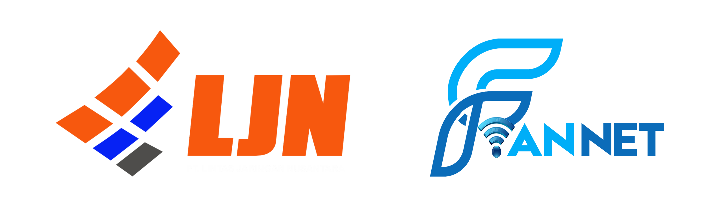
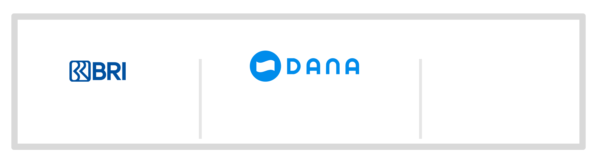

Kami informasikan bahwa layanan internet anda saat ini sedang di Isolir secara otomatis oleh sistem billing kami.
Dimohon untuk melakukan pembayaran tagihan, supaya internet kembali normal
Guna menghindari ketidaknyamanan ini, dimohon untuk melakukan pembayaran tepat waktu di tiap bulan nya.

Melewati Batas Tempo